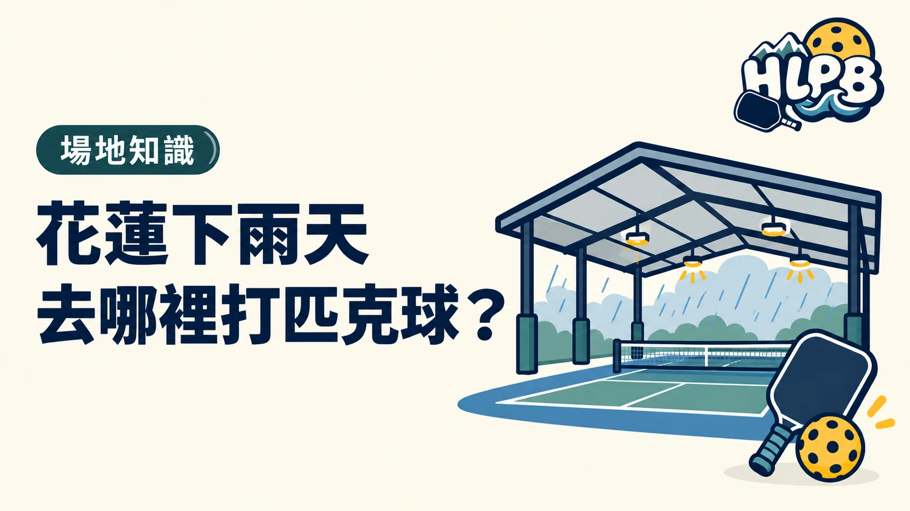

室內場地有哪些？
花蓮下雨時，可先從室內場地尋找打球空間。目前 HLPB 整理的室內地點包含匹勁球館、中華國小活動中心及東華附小樂群堂。
能直接前往嗎？
匹勁採預約制；中華國小與東華附小屬於校園場地，不能看到場地就直接進入使用，須先詢問校方或已租借團體。出發前也要確認當天時段、球網及費用，避免到場後無法使用。
最後查證：2026-09-30｜資料來源：HLPB 場地資料；中華國小與東華附小官網；使用限制由球友提供
返回文章列表
花蓮下雨時，可先從室內場地尋找打球空間。目前 HLPB 整理的室內地點包含匹勁球館、中華國小活動中心及東華附小樂群堂。
匹勁採預約制；中華國小與東華附小屬於校園場地，不能看到場地就直接進入使用，須先詢問校方或已租借團體。出發前也要確認當天時段、球網及費用，避免到場後無法使用。
最後查證：2026-09-30｜資料來源：HLPB 場地資料；中華國小與東華附小官網；使用限制由球友提供
返回文章列表